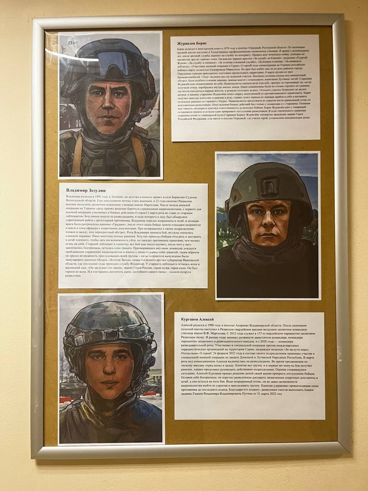

Борис родился в многодетной семье в 1979 году в посёлке Отрадный Ростовской области. По окончании средней школы поступил в профессионально-техническое училище. После срочной службы перешёл на контракт, прошёл через Северный Кавказ и множество других горячих точек. Награждён медалями «За службу на Кавказе», «За боевые отличия», «За воинскую доблесть». Участник военной операции в Сирии.
В ходе специальной военной операции на Украине российские войска к марту полностью блокировали Мариуполь. 9 марта группа из трёх бронетранспортёров «Тигр» выдвинулась на сложный участок; колонна попала под вражеский обстрел, головная машина была подбита. Старшина Журавлёв взял командование на себя, прикрывал отход товарищей и погиб, спасая раненых. Звание Героя России присвоено посмертно; в школе посёлка Отрадный установлена мемориальная доска.
Родился в 1991 году в Эстонии, детство и юность провёл в селе Борисово-Судское Вологодской области. Ещё школьником мечтал стать военным; в 22 года окончил Рязанское высшее воздушно-десантное командное училище имени Маргелова. После начала военной операции на Украине сразу принял решение бороться с украинскими националистами и с первого дня участвовал в боевых действиях.
12 марта рота под командованием старшего лейтенанта вышла на разведку, в ходе которой был обнаружен укреплённый район с артиллерией противника. Владимир передал координаты в штаб, позиция врага была разгромлена, взят в плен офицер с секретными документами. При возвращении рота попала в засаду. Имея многочисленные ранения, Зозулин приказал бойцам отходить и доставить в штаб пленного, а сам остался прикрывать отход и, когда закончились боеприпасы, подорвал себя гранатой вместе с приблизившимися врагами. Супруга: «Он был героем во всём. Я постараюсь воспитать сына, достойного своего папы».
Родился в 1990 году в посёлке Андреево Владимирской области. После школы поступил в Рязанское гвардейское высшее воздушно-десантное командное училище им. В. Ф. Маргелова. С 2012 года служил в 137-м гвардейском парашютно-десантном Рязанском полку, командовал парашютно-десантным и разведывательным взводами, с 2020 года — командир разведывательной роты. Участвовал в операции против международных террористических организаций в Сирии, награждён медалью «За заслуги перед Отечеством».
С 24 февраля 2022 года участвовал в специальной военной операции. В марте, при продвижении по лесному массиву, отряд попал в засаду. Капитан вёл группу и в первые же минуты боя получил ранение, однако продолжил руководить действиями. Он поручил разведчикам доставить захваченные секретные документы в штаб, а сам остался прикрывать отступление бойцов, ведя непрерывный огонь до последнего вздоха. Благодаря его подвигу разведчики смогли выполнить боевое задание.